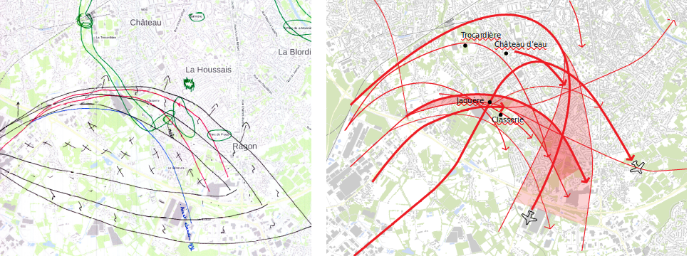
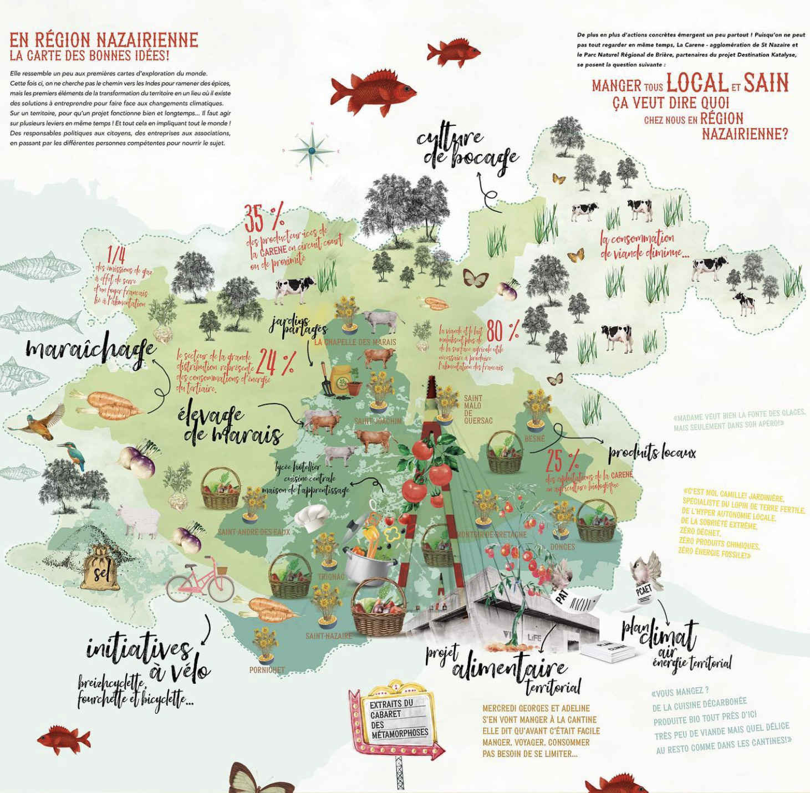

CETTE PAGE EST EN COURS DE CONSTRUCTION
Préambule
Sur cette page nous présentons l'ensemble des résultats issus de la thématique "bruit aérien".
Ceux-ci se déclinent en 4 parties, correspondant aux 4 actions définies collégiallement lors des ateliers : (1) Carte des perceptions du bruit aérien par les habitants, (2) Variabilité du bruit des avions, (3) Chiffres de sensibilisation et (4) Enquêt de gêne.
1. Carte de perception
Cette section présente le travail réalisé pour produire une carte de perception du bruit aérien par les habitants de Rezé.
Recueil
des témoignages
Un processus long, mais riche d'enseignements
Sur une période d'un mois, Natalia Escar Otin, chercheuse à l'Institut d'Agro d'Angers, a interviewé 23 habitants de Rezé, répartis sur tout le territoire communal. Ces entretiens avaient pour objectif de comprendre comment les habitants perçoivent leur environnement d'un point de vue sonore. À ce titre, un focus particulier était fait sur le bruit aérien.
Pour faciliter les échanges, chaque habitant disposait d'une carte vierge de Rezé, sur laquelle il était invité à dessiner / schématiser les éléments marquants pour lui. Cette phase a permis de mettre en évidence la réelle expertise développée par les habitants (reconnsaissance des sources, connaissance des variabilités en fonction des saisons, ...)
Cette matière ainsi collectée, couplée à la retranscription des échanges, a permis de produire une carte de synthèse représentant la perception "sonore" des habitants de leur territoire rezéen.

La carte
résultante
Synthétiser pour extraire l'essence du paysage sonore
Pour réaliser cette carte, synthétisant l'ensemble des contributions, il a fallu opérer un important travail de recoupement et de recherche graphique (comment représenter un son, sa dynamique, sa trajectoire, ... ?).
Pour ce faire, le consortium s'est appuyé sur les compétences de la graphiste Séverine Coquelin "La Vilaine est Jolie"
La carte ci-dessous constitue le fruit de tout ce travail

2. Variabilité du bruit des avions
Dans cette section nous présentons les résultats liés à la variabilité du bruit des avions.
Cette variabilité, supposée, a été remontée par les habitants à l'occasion des premiers ateliers (ex: bruit plus important le matin, trajectoires changeantes, ..). À ce stade du projet, il n'y avait pas d'éléments tangibles permettant de corroborer ces dires.
Dans ce contexte, l'objectif du travail a donc été d'apporter une approche scientifique, qui permette d'infirmer ou de confirmer le ressenti des habitants.
Trafic aérien
2020-2023
Trafic, toutes compagnies confondues
Sur la base des données issues de la plateforme NTE-Skyview, nous avons pû comptabiliser le nombre vols d'aéronefs au départ ou à l'arrivée de l'aéroport de Nantes Atlantique, pour les années 2020 à 2023.
Le graphique ci-dessous rend compte du trafic aérien mensuel, pour chacunes des années. Pour chaque mois, on visualise le nombre total de vols ainsi que la part des vols partant ou arrivant au nord (Piste 03), en direction de Rezé et Nantes.

Zoom sur les 5 principales compagnies
En utilisant les métadonnées associées aux trajectoires, il est possible d'analyser plus finement le trafic aérien en se concentrant sur les compagnies.
On y constate que l'aéroport Nantes-Atlantique est principalement utilisé par des compagnies dites "Low cost" (bas coûts) (4 des 5 plus présentes). Les compagnies Volotea et Easyjet dominent ce classement avec respectivement 27228 et 27120 vols depuis 2020, soit plus de 18 vols (atterrissage ou décollage) par jour en moyenne pour chacune de ces deux compagnies.

Dépassement
de couvre-feu
La carte présentée ci-dessous met en lumière les trajectoires et comptabilise les avions ayant dépassé le couvre-feu, instauré depuis le 1er avril 2022 et courant de minuit à 6 heures du matin.
Pour réaliser cette carte, nous nous sommes basé sur les données issues de la plateforme NTE-Skyview.
Ainsi, du 1er avril 2022 au 31 décembre 2023, on dénombre 603 aéronefs au départ ou à l'arrivée de l'aéroport de Nantes Atlantique, entre minuit et 6h du matin. Dans le détail, il s'agit en grande partie d'atterrissages. 73% de ces dépassements se font entre minuit et 1h. 90% se font avant 2h du matin.
Au final, cela représente en moyenne 7 dépassements par semaine.
Si on s'intéresse aux compagnies, on constate que plus d'un tiers des dépassements concerne la compagine Volotea (239). Deuxième sur le podium, avec 90 dépassements, on retrouve EasyJet, suivit par Transavia (82 dépassements).

Évolution
des trajectoires
Un ressenti ... à confirmer
Dans le cadre des ateliers menés avec les habitants, un point est rapidement apparut dans les échanges : le sentiment que les trajectoires des avions ont évolué, notamment en allant plus vers le nord, et que certaines zones autrefois non impactées l'étaient plus à présent.
À partir des trajectoires collectées depuis 2019, nous avons entrepris de vérifier ce ressenti.
Méthode
Mesurer l'évolution des trajectoires, présentes en si grand nombre sur la zone d'étude, n'est pas une chose triviale. Il est nécessaire de trouver un indicateur quantifiable qui reflète la variation. Pour faciliter la lecture de la carte résultante, nous avons choisi de simplement compter le nombre de passage d'avions par cellule pour chacune des années (2022 et 2023). À partir de là, il est aisé de calculer l'évolution.
De manière concrète, nous avons opéré comme suit :
1. définition d'un maillage hexagonale (d'environ 250m de large);
2. l'ensemble des trajectoires (au départ ou à l'arrivée de l'aéroport) en 2022 et 2023 est découpé avec ce maillage;
3. dans chacune des cellules, on compte le nombre de morceau de trajectoire présent, pour les années 2022 puis 2023;
4. dans chacune des cellules, on déduit l'évolution entre les deux années (2023 moins 2022);
5. on colorie les cellules avec une palette de couleur refletant l'évolution (vers le bleu foncé pour les valeurs négatives, montrant une diminution du nombre de vols en 2023 / vers le rouge foncé pour les valeurs positives, montrant une augmentation du trafic en 2023).

Interprétation
Sur cette carte on constate bien une évolution des trajectoires. Celles-ci ont tendance à se densifier sur le couloir d'atterrisage (trait rouge, en provenance de Nantes), ce qui est logique vu l'augmentation du trafi aérien entre ces deux années.
Chose plus intéressante, on visualise bien en orange une augmentation du nombre de trajectoires au-dessus de Rezé (entre 1/mois et 3/semaine), et en corolaire, une diminution dans les cellules bleues. Ceci montre effectivement un glissement vers le nord - nord/est des trajectoires (pour ce qui concerne Rezé - au nord-ouest on constate la même chose, au-desssus du bourg de Bouguenais).
Limites
Pour réaliser cette carte, nous n'avons traité les trajectoires qu'en 2 dimensions (projetées au sol). Ce résultat ne rend donc pas compte d'une possible modification des trajectoires en altitude. Ainsi, si un avion grimpe plus vite en altitude, mais en prenant un virage moins serré qu'en 2022, il apparaîtra en orange. Pour autant, il sera possible qu'il impacte une emprise au sol plus faible (et donc potentiellement moins d'habitants).